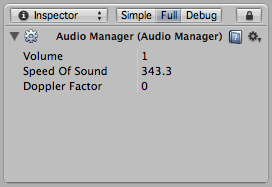

Audio Manager
The Audio Manager allows you to tweak the maximum volume of all sounds playing in the scene. To see it choose .

The Audio Manager
The Audio Manager
Properties
| Volume | The volume of all sounds playing. |
| Speed of Sound | The speed of sound. 343 is the real world speed of sound, if you are using a meters as your units. You can adjust this value to make your objects have more or less Doppler effect with larger or smaller speed. |
| Doppler Factor | How audible the Doppler effect is. When it is zero it is turned off. 1 means it should be quite audible for fast moving objects. |
Details
If you want to use Doppler Effect set Doppler Factor to 1. Then tweak both Speed of Sound and Doppler Factor until you are satisfied.